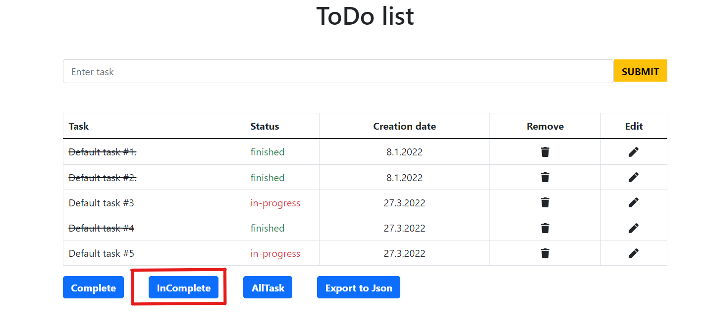
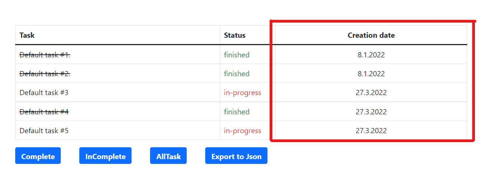

Obsah
Tato aplikace je navržena pro administrátory, kteří tak mohou zadávat úkoly běžným uživatelům. Administrátoři mohou zadávat úkoly, ožnačit je jako hotové (popřípadě nehotové), přejmenovat úkoly a smazat úkoly. Obě tyto skupiny (Administrátoři a uživatelé) mohou úkoly sledovat, ale také zobrazovat pouze splněné nebo nesplněné. V poslení řadě obě skupiny mohou úkoly zobrazit a stáhnout ve formátu Json.
Do kolonky "username" zapište svoje přihlašovací jméno.

Do kolonky "password" napište svoje heslo.

Po vyplnění přihlašovacího jména a hesla klikněte na tlačitko "sign in".

Poté budete přesměrování přímo do aplikace a budou zpřístupněny všechny administrátorské funkce.
V případě, že zadáte špatné uživatelské jméno nebo heslo, zobrazí se chybové okénko upozorní vás na to. Klikněte na tlačítko "OK" a proveďte kroky 1-3 znovu.


Obsah
Toto je hlavní strana aplikace. Zde najdete tlačítko, tabulku a 4 další tlačítka pod tabulkou, ale i některé administrátorské funkce v tabulce, které jsou vysvětleny níže.
Mezi nadpisem a tabulkou je kolonka s připraveným textem "Enter task", sem napište název úkolu, který chcete předat.
Poté stiskněte tlačítko "SUBMIT", které je vedle kolonky. Nový úkol se poté zobrazí v tabulce.
Tato tabulka obsahuje pět sloupců a počet řádků odpovídající počtu úkolů.
V prvním sloupci je název zadaného úkolu. Pokud je název úkolu škrtnutý, úkol je splněný pokud není škrtnutý, úkol není splněný. Více o splněných a nesplněných úkolech v další sekci.
Ve druhém sloupci (Status) je stav zadaného úkolu tzn. "in-progress" (v procesu, neboli zatím nesplněné) nebo "finished" (dokončený). Jako administrátor můžete měnit stav úkolu a to tak, že kliknete přímo na text v tomto sloupci.
Ve třetím sloupci (Kreatin date) se nachází datum, kdy byl úkol zadán.
Ve čtvrtém sloupci (Remove), je ikona koše, při kliknutí na tuto ikonu se odebere úkol na daném řádku.
V pátém sloupci (Edit), je ikona tužky, při kliknutí na tuto ikonu můžete přepsat název úkolu, tím že nový text napíšete do kolonky nad tabulkou a kliknete na tlačítko "SUBMIT", název úkolu se tímto přepíše (pouze název), stejným způsobem jako při přidání nového úkolu v sekci [3.1]
Při stisku tohoto tlačítka se v tabulce zobrazí pouze splněné úkoly (úkoly které mají status "finished").
Při stisku tohoto tlačítka se v tabulce zobrazí pouze nesplněné úkoly (úkoly které mají status "in-progress").

Při stisku tohoto tlačítka se v tabulce zobrazí všechny úkoly (splněné i nesplněné). Toto je vhodné použít především v případě, že bylo předtím stisknuto tlačítko "Complete" nebo "InComplete".
Při stisku tohoto tlačítka se všechny úkoly v tabulce zobrazí na nové kartě prohlížeče jako data v Json formátu, zároveň se tato data stáhnou do lokálního úložiště zařízení jako soubor typu Json.

Tímto tlačítkem se odhlásíte a vrátíte se na úvodní stranu aplikace (pro přihlášení jiného uživatele).
POZOR: Odhlášení proběhne i při obnovení stránky, tím způsobem, že se zobrazí okno s varovným textem. Pod ním je tlačítko "Back", při jeho stisku se dostanete zpět na úvodní stranu aplikace.
Obsah
Toto je hlavní strana aplikace. Zde můžete vidět tlačítko, tabulku a čtyři další tlačítka pod tabulkou.
Tato tabulka obsahuje tři sloupce a počet řádků odpovídající počtu úkolů.
V prvním sloupci je název zadaného úkolu. Pokud je název úkolu škrtnutý, úkol je splněný pokud není škrtnutý, úkol není splněný. Více o splněných a nesplněných úkolech v další sekci.

Ve druhém sloupci je stav zadaného úkolu tzn. "in-progress" (v procesu neboli zatím nesplněné) nebo "finished" (dokončený).

Ve třetím sloupci se nachází datum, kdy byl úkol zadán.

Při stisku tohoto tlačítka se v tabulce zobrazí pouze splněné úkoly (úkoly které mají status "finished").

Při stisku tohoto tlačítka se v tabulce zobrazí pouze nesplněné úkoly (úkoly které mají status "in-progress").

Při stisku tohoto tlačítka se v tabulce zobrazí všechny úkoly (splněné i nesplněné). Toto je vhodné použít především v případě, že bylo předtím stisknuto tlačítko "Complete" nebo "InComplete".
Při stisku tohoto tlačítka se všechny úkoly v tabulce zobrazí na nové kartě prohlížeče jako data v Json formátu, zároveň se tato data stáhnou do lokálního úložiště vašeho zařízení jako soubor typu Json.

Obsah
Stav úkolu změníte tak, že kliknete na aktuální stav daného úkolu ("finished" nebo "in-progress") ve sloupci "Status"
Po kliknutí na ikonu tužky ve sloupci "Edit", text nového úkolu napíšete do kolonky nad tabulkou a poté kliknete na tlačítko "SUBMIT"